地政学
ワガドゥグーはサヘル危機の南縁で国家中枢を担います。マリ、ニジェール、沿岸国、旧宗主国フランス、ロシア接近、ECOWASとの緊張が絡み、内陸国の外交と治安が街の日常まで届きます。援助や軍事協力の向きも揺れます。
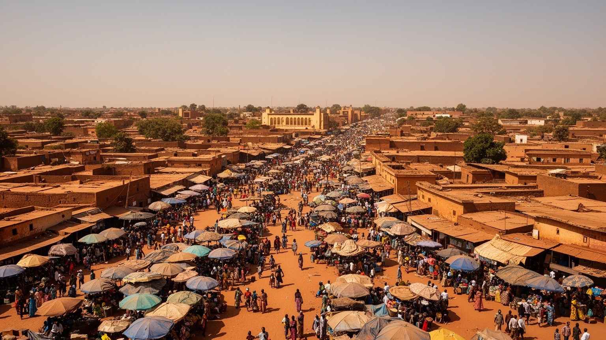
🇧🇫 ブルキナファソ / 首都 / World City Atlas
サヘル南縁の乾いた高原に広がるブルキナファソの首都です。政治の緊張、治安危機、映画と工芸の文化、市場と非公式労働、宗教共同体、暑さと水の管理が、日々の都市を形作っています。
都市の骨格
ワガドゥグーは、港や大河ではなく、内陸交通、行政、王権の記憶、軍事と市民社会、映画祭と市場によって都市の重心を作ってきました。乾いた気候の中で、人口増と安全保障の圧力を同時に受けています。
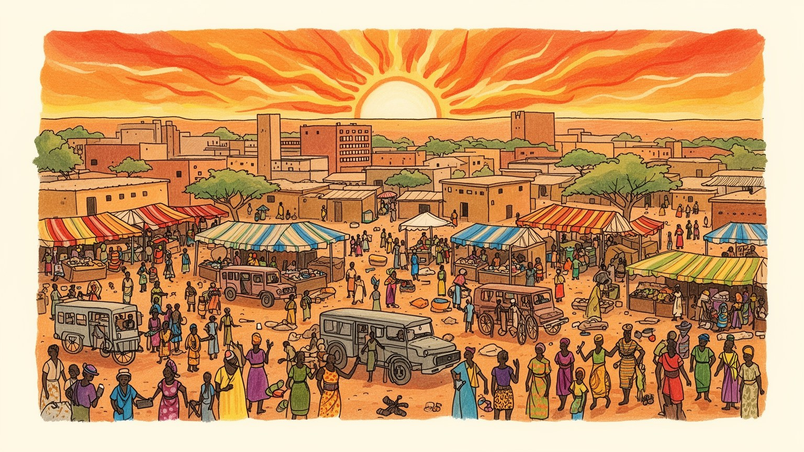
ワガドゥグーはサヘル危機の南縁で国家中枢を担います。マリ、ニジェール、沿岸国、旧宗主国フランス、ロシア接近、ECOWASとの緊張が絡み、内陸国の外交と治安が街の日常まで届きます。援助や軍事協力の向きも揺れます。
行政、商業、交通、建設、食品加工、工芸、通信、露店が雇用を支えます。安定した職は限られ、若者の多くは非公式経済で働きます。物価、燃料、治安、移住が家計の選択を左右します。手仕事と小商いが街を動かします。
モシ王権の記憶、イスラム、キリスト教、伝統信仰、映画祭、工芸祭が重なります。金曜礼拝、教会、宮殿儀礼、市場の音、映画人の交流が、政治都市を文化都市にもしています。祈りと上映がさらに人を広く集めます。
住民はバイク、乗合交通、市場、井戸、水道、学校、診療所を使い分けます。旅行者は映画祭、国立博物館、工芸村、モロ・ナバ宮殿、市場を訪れますが、治安情報の確認が欠かせません。短い滞在でも暑さと水を意識します。
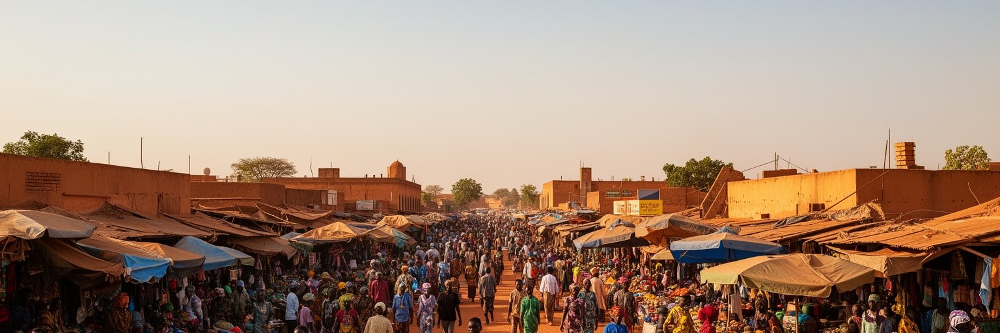
ワガドゥグーは、サヘル南縁の高原に広がる内陸首都です。海港も大河港も持たないため、都市の力は道路、行政、商業、文化行事、人の移動から生まれます。赤土の街路、乾いた風、強い日差し、雨季の短い緑は、ブルキナファソの国土条件をそのまま映します。首都は国のほぼ中央に位置し、ボボディウラッソ、カヤ、クドゥグ、ガーナ方面、ニジェール方面へ向かう交通が集まります。周辺農村からは食料、労働力、学生、商人が流れ込み、地方へは行政サービス、商品、情報、政治の決定が戻ります。人口増は速く、低層の住宅地と未舗装道路が周縁へ伸びています。ワガドゥグーの大きさは、豊かな資本だけでなく、農村から都市へ安全、教育、仕事を求める人の動きによって作られています。サヘルの首都であることは、気候、貧困、軍事、越境交易、若者の希望を同時に抱えることです。都市を歩くと、国家の地図上の中心ではなく、乾いた土地で生活を組み立てる人々の中心としての姿が見えてきます。ワガドゥグーは、脆弱さと粘り強さが同じ街路に並ぶ首都です。広い空と低い建物の間に、行政、商売、家族、信仰、映画の看板が重なり、サヘル都市の複雑さを静かに示しています。周縁の新しい住宅地まで見ると、都市化が計画より速く進み、中心と郊外の距離を毎日広げていることも分かります。
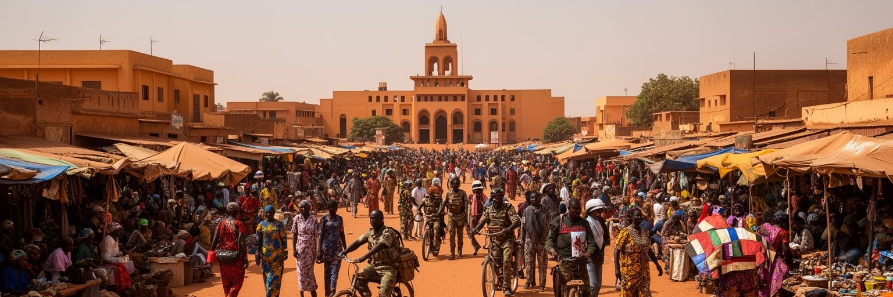
ワガドゥグーは、ブルキナファソの国家権力が最も集中する場所です。大統領府、官庁、軍、外交団、裁判所、政党、市民団体、報道機関が近い距離で活動します。近年のクーデターと軍政、サヘル北部から広がる武装勢力の脅威、国内避難民の増加は、首都の空気を大きく変えました。治安は遠い国境地帯だけの問題ではなく、道路検問、夜間移動、集会、報道、支援機関の活動、物価に影響します。一方で、ワガドゥグーには強い市民社会の記憶もあります。権威主義への抗議、学生運動、労働組合、文化人の発言は、政治を軍と官庁だけに閉じ込めません。現在の緊張の中でも、住民は学校へ通い、店を開き、宗教行事を続け、家族を支えます。首都の政治性は、広場での大きな出来事だけでなく、治安不安の中で普通の生活をどう守るかにも現れます。ワガドゥグーを理解するには、国家の公式発表と街の生活感覚を並べて見る必要があります。強い安全保障の言葉の背後には、避難してきた家族、仕事を失った若者、警戒しながら移動する商人がいます。政府中枢の都市であるほど、政治判断の結果は住民の近くに届きます。その近さが、ワガドゥグーをサヘル危機の単なる背景ではなく、危機を日々処理する現場にしています。だから官庁街の景観は、権力の象徴であると同時に、市民が安全、自由、仕事を求めて見つめる公共空間でもあります。
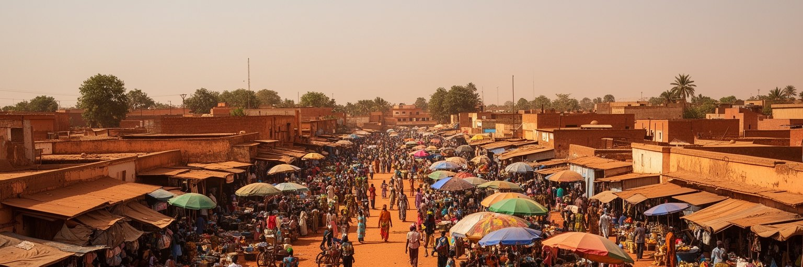
ワガドゥグーの経済は、統計に見えにくい非公式労働に大きく支えられています。道路沿いの屋台、携帯電話修理、バイク部品、野菜売り、縫製、軽食、建設日雇い、荷運び、家事労働、乗合交通は、都市の日常を動かす不可欠な仕事です。公務員や銀行員のような安定した雇用もありますが、人口増に比べて formal な職は足りません。若者は学校を出ても仕事を見つけにくく、家族や友人のネットワークを頼りに小さな商売を始めます。女性の売り手は市場と住宅地をつなぎ、食料価格の変化を最も早く感じます。燃料費、輸入品、治安不安、通貨圏の物価、農産物の季節変動は、露店の仕入れと家計を揺らします。非公式経済は脆弱ですが、同時に都市の柔軟性でもあります。道路脇の小さな店は、低所得者に安いサービスを提供し、移住者に最初の収入を与えます。ただし、税、衛生、交通安全、占用、社会保障、警察との関係は常に問題になります。ワガドゥグーの労働を読むには、工場数やGDPだけでなく、朝に店を広げ、暑さの中で客を待ち、夕方に売上を家へ持ち帰る人々の時間を見る必要があります。都市の活力は、その小さな利益の積み重ねから生まれています。小商いは不安定ですが、家族の学費、食費、家賃をつなぐ現実的な仕組みでもあり、制度化だけでは測れない知恵を多く含みます。
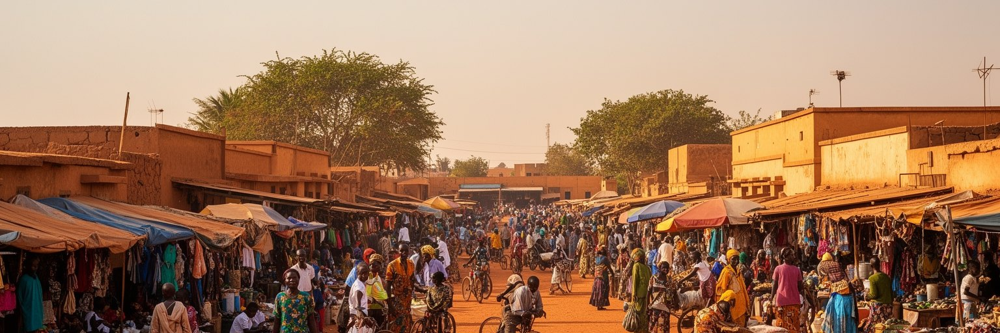
ワガドゥグーは、政治と治安の都市であるだけでなく、アフリカ映画の重要な舞台です。FESPACOとして知られるワガドゥグー全アフリカ映画祭は、監督、俳優、批評家、学生、観客を大陸各地から集め、街に別の時間を作ります。上映会場、文化センター、広場、ホテル、カフェでは、植民地後の記憶、都市生活、女性、農村、移民、戦争、家族、信仰をめぐる映像が議論されます。映画祭は観光イベントであると同時に、アフリカが自分の物語を自分の言葉と映像で語るための制度です。ブルキナファソは経済規模では大国ではありませんが、ワガドゥグーは映像文化の首都として強い象徴性を持ってきました。街の映画館や制作環境は資金不足に悩みますが、若い制作者は携帯映像、短編、ドキュメンタリー、音楽映像を通じて新しい表現を探します。文化は危機の飾りではありません。治安不安や政治的圧力の中で、映画は社会を記録し、語りにくい痛みを共有し、外の世界とつながる道になります。ワガドゥグーの文化的な深さは、華やかな祭典の日だけでなく、上映後に続く会話、学校での映像教育、小さな制作現場にあります。スクリーンの光は、乾いた夜の街で社会の記憶を映し出します。映画祭の時期には、宿、飲食店、運転手、翻訳者、学生ボランティアも動き、文化が街の経済を広く刺激します。
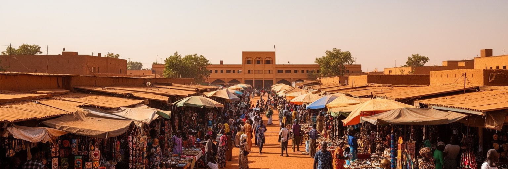
ワガドゥグーの市場と工芸は、都市の生活文化を最も直接に見せます。大市場、地区の露店、工芸村、道路沿いの作業場では、布、革、木彫、青銅、籠、食品、香辛料、修理品、日用品が並びます。工芸品は観光客への土産であるだけでなく、職人家族の技術、農村素材、都市の消費、輸出の回路をつなぎます。ブルキナファソの工芸は、SIAOのような国際的な工芸見本市によって広く知られていますが、日常の市場では値段交渉、仕入れ、仕上げ、運搬、現金のやりくりが続いています。市場は都市の食料供給の場でもあり、農村から来る穀物、野菜、家畜、加工食品が家庭の食卓へ届きます。火災、混雑、衛生、交通渋滞、治安、雨季の排水は大きな課題です。市場を整備しすぎれば小さな売り手が追い出され、放置すれば危険が増えるため、都市政策には細かな調整が必要です。ワガドゥグーの市場を歩くと、国家統計では見えにくい創意工夫に出会います。職人は古い技術を守りながら、観光客、国内中間層、オンライン販売、地域見本市へ対応します。市場と工芸は、貧しさの象徴ではなく、都市が自分で価値を作り直す場所です。手で作り、声で売り、関係で信用を築く経済が、首都の底力を支えています。買い物の場であると同時に、職人の評判、家族の紹介、地域の情報が行き交う社会的な広場にもなっています。
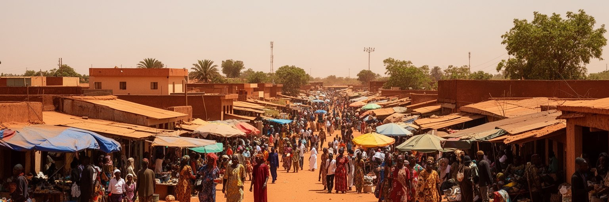
ワガドゥグーの日常は、低層住宅地と広がる周縁部の中で営まれます。中心部には官庁、商店、銀行、ホテルがありますが、多くの住民は中庭のある家、未舗装道路、地区市場、学校、モスク、教会、給水点、バイクの修理店に囲まれて暮らします。人口増が速いため、住宅地は市街地の外側へ伸び、土地の権利、区画整理、電気、水道、排水、道路照明、学校不足が問題になります。地方や危険地域から移ってきた家族にとって、首都は安全と仕事の可能性を持つ場所ですが、家賃や食費は重い負担です。若者は親族の家に身を寄せたり、複数の仕事を組み合わせたりして都市生活を始めます。暑さの強い日には、日陰、中庭、夜の涼しさが生活リズムを決めます。女性は水くみ、料理、商売、子どもの世話を担うことが多く、公共サービスの不足は家事労働の時間として現れます。住宅問題は建物だけの話ではありません。通勤距離、治安、学校、診療所、雨季の泥道、家族の支え合いを含む生活基盤です。ワガドゥグーの住宅地を読むと、首都への人口集中が、希望と不安を同時に運んでいることが分かります。低い屋根の連なりには、都市が毎日少しずつ増築され、調整され、耐え続ける姿があります。近所づきあいは、水、子守り、病気、葬儀、仕事探しを支える実用的な仕組みでもあり、都市の孤立を和らげています。
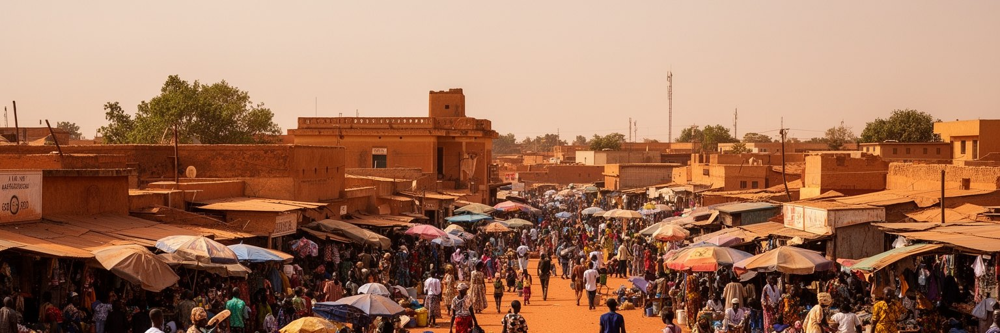
ワガドゥグーでは、水と暑さが都市の基本条件です。乾季には空気が乾き、ハルマッタンの砂塵が視界と健康に影響し、暑季には屋外労働、通学、市場、交通が厳しくなります。雨季は短い恵みをもたらしますが、排水の弱い道路や低地では冠水、泥、蚊、交通の混乱が起こります。都市の拡大が早いほど、水道管、貯水、排水路、ゴミ収集、街路樹、日陰の整備は追いつきにくくなります。水は単なるインフラではなく、家庭の時間を決める要素です。給水が不安定な地区では、朝夕の水くみや貯水が家事と商売の予定を左右します。暑さは医療、学校、食料保存、建築材料、電力需要にも関係します。涼しい室内を保てる家と、薄い屋根で日差しを受ける家の差は、健康と学習の差にもなります。ワガドゥグーの気候対策は、巨大な技術だけでは足りません。排水溝の清掃、木陰の維持、給水点の配置、屋根と壁の工夫、暑い時間帯の労働調整、保健情報の共有が重要です。サヘルの都市で暮らすことは、乾きと雨の両方に備えることです。ワガドゥグーの街路に立つと、気候が抽象的な環境問題ではなく、飲む水、歩く道、休む場所、働く時間として日々現れることが分かります。小さな日陰や壊れた排水溝の差が、学校へ行く子どもや市場で働く人の一日に直接響くのです。暑熱への備えは都市福祉そのものです。
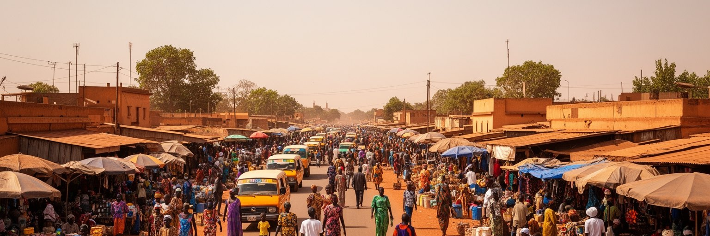
ワガドゥグーの移動は、バイク、乗合車、タクシー、長距離バス、徒歩、貨物トラックの組み合わせで成り立ちます。市内では二輪車が非常に目立ち、通勤、通学、配達、買い物、商売の足になります。車より安く、狭い道でも動けるため、低所得者や若者にとって重要ですが、事故、排気、ヘルメット、道路照明、雨季の路面は大きな課題です。ワガドゥグーは内陸国の首都なので、輸入品、燃料、建材、食料、援助物資は港から長い陸路を通って届きます。ガーナ、コートジボワール、トーゴ、ベナン方面の回廊は、物価と供給の安定に直結します。市内の渋滞は大都市ほど巨大ではありませんが、人口増と周縁拡大により、通勤時間と交通費は増えています。鉄道や空港も国際接続を支えますが、多くの住民の日常は道路に依存しています。交通政策は、舗装、排水、信号、歩道、バス、駐輪、安全教育を同時に考える必要があります。治安悪化によって地方路線が不安定になると、商人、学生、患者、家族訪問にも影響が出ます。ワガドゥグーの交通を読むことは、内陸国家が外の港、地方都市、危険地域、都市周縁をどのように結んでいるかを読むことです。バイクの流れは、街の経済と家族の予定を毎日運んでいます。安全な移動が確保されるほど、学校、病院、市場、行政の利用もしやすくなり、都市の機会は広がります。
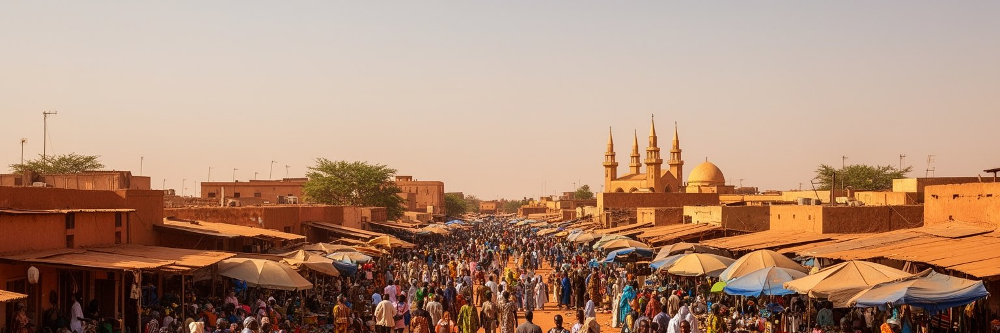
ワガドゥグーでは、イスラム、キリスト教、伝統的な信仰と儀礼が都市の生活に深く関わります。金曜礼拝、日曜礼拝、命名式、結婚式、葬儀、断食月、祝祭は、家族と近隣を結び直す時間です。宗教施設は祈りの場であるだけでなく、相談、相互扶助、教育、寄付、危機時の支援の場にもなります。モシ王権の象徴であるモロ・ナバの儀礼は、近代国家の首都に伝統的権威の記憶を重ねます。都市化が進むと、地方から来た人々は親族、出身地団体、宗教共同体を頼りに住まいと仕事を探します。共同体は安心を与える一方、若者や女性の選択、宗派間の緊張、政治利用の問題も抱えます。サヘルの治安危機では、宗教が暴力の説明に使われることがありますが、ワガドゥグーの日常では多くの信仰者が共存し、家族や市場や学校を共有しています。大切なのは、宗教を対立の記号だけで見ないことです。祈り、音、服装、食事、礼儀、助け合いの実践は、都市の社会的な安全網を作ります。ワガドゥグーを歩くと、モスクの周りの人の流れ、教会の歌、伝統儀礼への敬意が、政治の不安とは別の秩序を生んでいることが分かります。共同体の力は、危機の時ほど静かに必要とされます。都市の信頼は法律だけでなく、近所のあいさつ、葬儀の助け合い、祈りの場での相談にも支えられています。そうした関係が孤立を防ぎます。
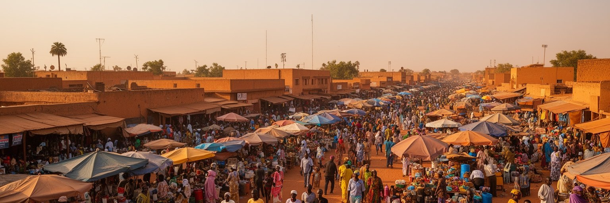
ブルキナファソの北部と東部で続く武装勢力の活動は、ワガドゥグーの都市生活にも深い影を落としています。多くの人が村や町を離れ、安全、学校、医療、仕事、親族の支援を求めて首都や周辺部へ移動します。国内避難民の増加は、住宅、食料、医療、教育、雇用、行政手続きに大きな負担をかけます。ワガドゥグーでは、支援機関、政府、宗教団体、市民団体、家族ネットワークが支援を行いますが、必要は常に大きく、長期化するほど受け入れ側の生活も厳しくなります。地域危機は安全保障の地図だけでは説明できません。畑を失った家族、学校を中断した子ども、都市で仕事を探す若者、遠方の親族へ仕送りする人、物価上昇に耐える家庭がいます。首都の市場で穀物価格が上がり、郊外に新しい居住地ができ、教室が混み合う時、危機は日常の形になります。ワガドゥグーは比較的安全な中心であると同時に、危機の結果を受け止める場所です。外から見ると政治ニュースに見える出来事も、住民にとっては隣人の移動、家計の圧迫、移動の不安として経験されます。サヘルの危機を理解するには、前線だけでなく、避難した人々が都市で再び生活を組み立てる過程を見る必要があります。支援が長期化するほど、教育の継続、心のケア、受け入れ地区の負担軽減が重要になります。都市の側にも持続的な支えが必要です。
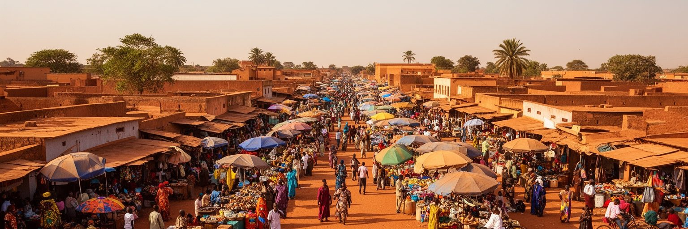
ワガドゥグーを読む時、治安危機や軍政だけで都市を閉じてしまうと、重要なものを見落とします。確かに現在のブルキナファソでは、安全保障、政治的自由、外交関係、避難民、物価が大きな課題です。しかし同じ街には、映画祭を準備する人、工芸を磨く職人、市場で朝から売る女性、バイクで通学する学生、礼拝へ向かう家族、暑さの中で水を運ぶ子ども、行政窓口で手続きを待つ住民がいます。首都の意味は、危機を受け止める制度と、生活を続ける人々の両方から成り立ちます。ワガドゥグーは経済的には世界の巨大都市ではありませんが、サヘルの現在を理解するための重要な都市です。内陸国の交通、若者の雇用、気候適応、文化の発信、宗教の共存、国家の正統性が同じ空間にあります。旅行者や読者は、街を単なる危険情報の点として扱うのではなく、どのように人が集まり、働き、祈り、語り、耐えているかを見ていく必要があります。ワガドゥグーの価値は、困難を美化することではなく、困難の中でも都市が文化と日常を維持している事実を丁寧に読むことにあります。その視点で見ると、赤土の道、映画館、工芸村、市場、官庁、モスク、住宅地は、サヘルの未来を考えるための生きた教材になります。小さな場面を積み重ねて見るほど、ニュースの見出しでは届かない都市の厚みが立ち上がります。